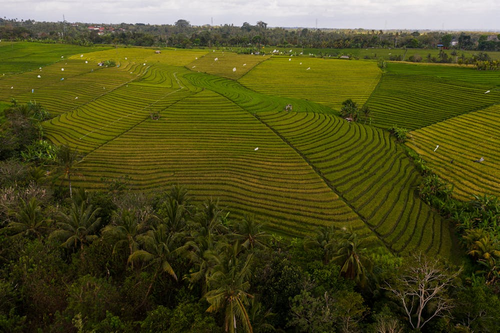
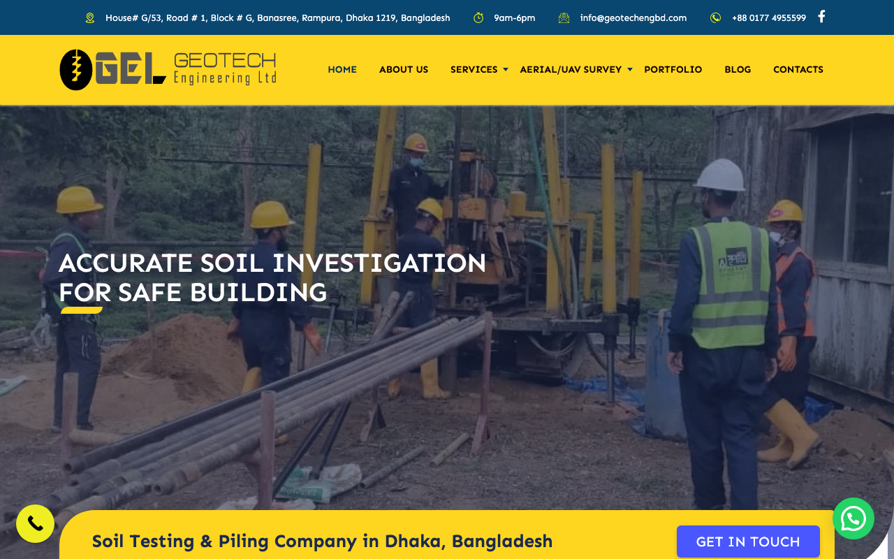
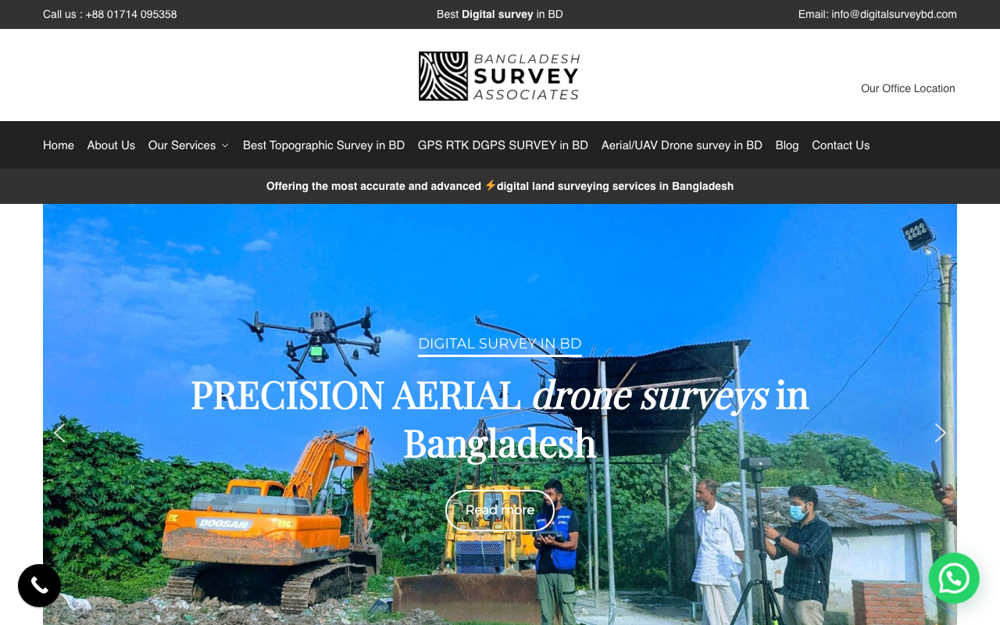
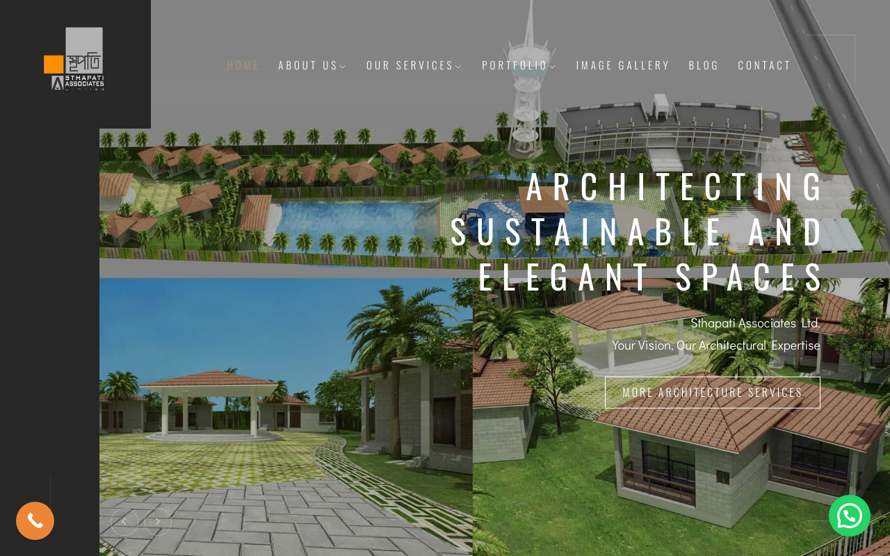
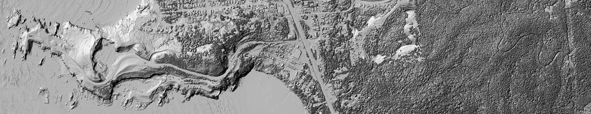
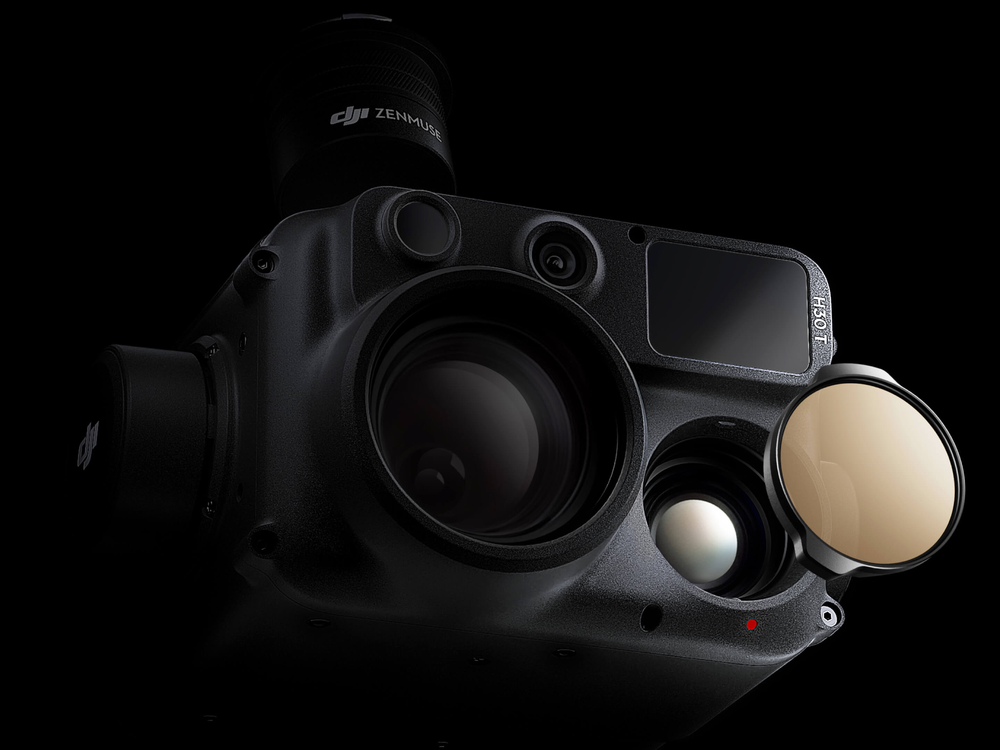

Business Proposal & Strategic Overview
Bangladesh Geospatial Services Market
Bangladesh LiDAR Market:
Agricultural Drones (Asia-Pacific):

Drone aerial view of agricultural field
| Farm Category | Number of Farms | Size Range | Market Potential |
|---|---|---|---|
| Small Farmers | 10 million | 5-10 acres | ⭐⭐⭐⭐⭐ |
| Medium Farms | 500,000 | 10-50 acres | ⭐⭐⭐⭐ |
| Large Commercial | 50,000 | 50+ acres | ⭐⭐⭐ |
| Total Agricultural Land | 16 million hectares | ⭐⭐⭐⭐⭐ | |
Who We're Competing Against
| Capability | Competitors | Our Startup | Impact |
|---|---|---|---|
| LiDAR + Data Science | Photo only | LiDAR + AI | Data Accuracy + Insights |
| Services | Data collection | Data + Apps + Consulting | End-to-end Solutions |
| Focus | Multi-sector (no farmers) | Multi-sector + Farmers | Broader Market |
| Distribution | Direct sales only | Direct + NGO channel | 10M+ Farmer Access |
| Revenue Model | Projects only | Projects + Subscriptions | Recurring Revenue |
| Innovation | Stable/Mature | Rapid Data Science Development | Future-proof |
Competitors use photogrammetry OR basic LiDAR. None combine with Data Science for predictive insights.
Agnibot is only agricultural player, but with basic technology. 10M farmers underserved.
All competitors = data collection only. None offer applications or consulting services.
All use direct sales. No one has built channel to reach small farmers at scale.
No subscription models. All revenue project-based, highly variable.
All competitors offer reactive data. None provide forward-looking insights for planning.
18-24 months before competitors can replicate our model
How Established Competitors Present Online

Est. 1990s (23+ yrs)
Traditional surveying
No Data Science

Est. 1998 (25+ yrs)
Modern platform
No farmer focus

Est. 2001 (20+ yrs)
Construction focus
Limited ag
Est. 1990 (30+ yrs)
Traditional topography
No Data Science or farmer apps
Software company
Limited GIS
Not direct competition
No Website
Agricultural only
Limited to 2 regions
✓ ONLY LiDAR + Data Science combined | ✓ ONLY NGO distribution | ✓ ONLY farmer apps | ✓ FIRST-MOVER | ✓ MODERN tech stack
Four-Tier Service Strategy
Raw LiDAR data acquisition for government, private surveying projects
Price: BDT 50,000-500,000 per mission | Margin: 35% | Target: Government, surveyors
Orthomosaics, DSM, DTM, 3D models with analysis and reports
Price: BDT 200,000-1,500,000 per project | Margin: 50% | Target: Infrastructure, real estate, government
Farmer apps (yield prediction, disease detection, irrigation planning) + NGO integration
Price: BDT 5,000-20,000/farmer/year | Margin: 65% | Target: Farmers via NGOs, premium government
Strategy consulting, training, capacity building, data governance frameworks
Price: BDT 2,000,000-5,000,000 per engagement | Margin: 70% | Target: Ministry of Agriculture, World Bank, major NGOs
| Tier | Revenue Type | Price Range | Margin | Scalability |
|---|---|---|---|---|
| Data Collection | Project | BDT 50K-500K | 35% | Limited (equipment-constrained) |
| Processed Maps | Project | BDT 200K-1.5M | 50% | Good (processing-limited) |
| Farmer Apps | Subscription | BDT 5K-20K/yr | 65% | Excellent (software-based) |
| Consulting | Project | BDT 2M-5M | 70% | Limited (team-constrained) |
BDT 30 Lakhs
Break-even year
Tiers 1 & 2 only
BDT 96.5 Lakhs
51% profit margin
Tiers 1-3 scaling
BDT 204 Lakhs
67% profit margin
All tiers scaling
Making It Work in Bangladesh
Covers damage to third parties (people, property). Mandatory for all operations. Premium: BDT 3-5 lakhs/year.
| Cost Category | Amount (BDT Lakhs) | Notes |
|---|---|---|
| Pilot Training & Certification | 8-12 | 2 pilots at Avion Aerospace Academy |
| Medical Certifications | 1-2 | Class 3 for all pilots |
| Drone Registration | 2-3 | CAAB fees + processing |
| Insurance (3rd-party liability) | 3-5 | Annual premium for BDT 50-100L coverage |
| Ongoing Compliance & Renewals | 2-3 | Annual certifications, renewals, audits |
| Total Year 1 Regulatory | 25-45 | Essential for operations |

DJI Matrice 300 RTK
Professional Drone Aircraft
3-Year Business Model
| Category | Amount (BDT Lakhs) | Purpose |
|---|---|---|
| Equipment | 35-45 | 2-3 Matrice 300s, LiDAR, workstations, software licenses |
| Regulatory & Setup | 25-45 | Pilot training, CAAB certification, insurance, registration |
| Infrastructure | 10-15 | Office setup, cloud account, data storage (first year) |
| Team Salaries (6 months) | 20-25 | Founder, operations lead, 2 pilots, data analyst, business dev |
| Working Capital Buffer | 10-15 | Operational expenses before revenue ramps |
| TOTAL INITIAL INVESTMENT | 100-125 | To reach break-even Month 10 |
Break-even Month 10
Revenue trajectory growing monthly
LiDAR elevation model
showing data collection capability
Year 2 is where the model transforms. Farmer apps and NGO partnerships go live, adding 5,000+ farmers. Higher margins on app revenue (65%) + more government projects = 51% profit margin company.
Year 3 shows the full potential. Farmer app base grows to 16,000, government consulting expands, regional hubs are operational. Revenue doubles Year 2→Year 3. Expenses grow slower (leverage + efficiency). 67% margins show we're a highly profitable software-enabled services company.
| Metric | Year 1 | Year 2 | Year 3 | 3-Year Total |
|---|---|---|---|---|
| Revenue | BDT 30L | BDT 96.5L | BDT 204L | BDT 330.5L |
| Expenses | BDT 30L | BDT 47.5L | BDT 67.5L | BDT 145L |
| Profit | BDT 0 | BDT 49L | BDT 136.5L | BDT 185.5L |
| Margin % | 0% | 51% | 67% | 56% |
| Initial Investment | BDT 100-125 Lakhs | ↓ | ||
| ROI (3-Year) | 185.5 / 112.5 = 164% | 164% (Conservative) | ||
| IRR (3-Year) | Accounting for timing of cash flows | 85-95% | ||
Lesson: Pure services business, highly variable project revenue
Lesson: Recurring revenue (apps) reaches 26%, becoming stability pillar
Lesson: Apps are now largest revenue source (39%), providing stability
How Technology Creates Farmer Value
Value: 5-15% yield improvement = BDT 50K-200K/yr
Price: BDT 5,000/year
Value: Prevent 10% crop loss = BDT 100K-300K/yr
Price: BDT 8,000/year
Value: 20-30% water savings = BDT 30K-80K/yr
Price: BDT 7,000/year

Thermal imaging for
disease & pest detection
What Could Go Wrong (and How We'll Handle It)
CAAB tightens regulations, restricts LiDAR operations, or adds new fees
Could increase operating costs 20-50%, delay flights, reduce addressable market
Medium (30-40%) - CAAB modernizing, but regulations evolving
Established competitors (GeoTech, Digital Survey) add Data Science apps to their offerings
Reduce our differentiation, increase pricing pressure, slow farmer adoption
Medium (40-50%) - Competitors are capable but resource-constrained
NGO partners (BRAC, ASA) not interested in app distribution, or distribute poorly
Farmer app revenue takes 2+ years longer to scale, business becomes services-only
Medium (30%) - NGOs are eager for new revenue, but execution risks exist
LiDAR data integration with Data Science models proves harder than expected, models underperform
Farmer apps don't deliver promised ROI, adoption stalls, revenue model fails
Low-Medium (20%) - Technology is proven, but integration complexity is real
Difficulty recruiting experienced pilots, Data Science engineers, GIS specialists in Bangladesh
Hiring delays slow operations by 3-6 months, require higher salaries, reduce margins
High (60%) - Bangladesh tech talent market is competitive
Farmers reluctant to adopt apps, prefer traditional methods, low willingness-to-pay
Farmer app adoption lags, recurring revenue doesn't materialize, business remains services-only
Medium (30-40%) - World Bank data shows 127K farmers *already* adopting drones
Months 1-36: How We'll Execute
Why This Is An Exceptional Opportunity
We're Building the #1 Geospatial Intelligence Platform for Bangladesh & South Asia
Combining:
BDT 100-125 Lakhs
187% ROI
Contact the team for:
Investment terms:
Thank you for your time and consideration.
We look forward to building Bangladesh's leading geospatial intelligence platform together.